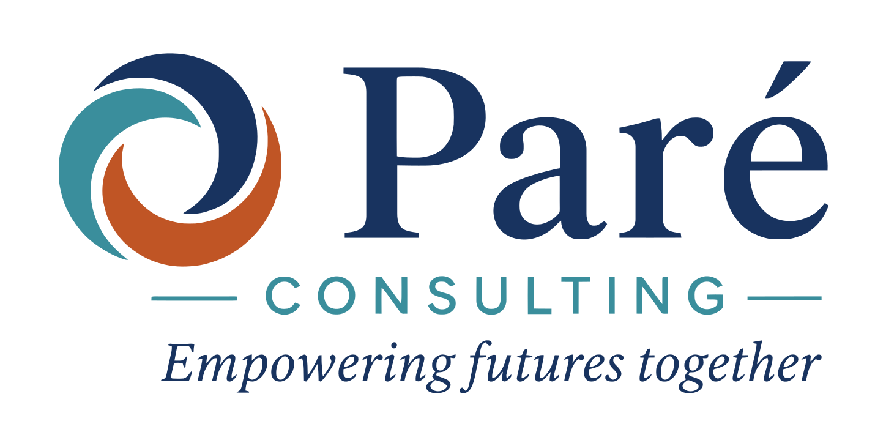

The Career Design Blueprint™ Scorecard

The Scorecard link will arrive in your inbox the morning of Monday, September 21.
Don't miss it: scroll down to put it on your calendar.
Here's how to unlock the bonuses and extras
Complete your Scorecard between September 21 and October 2. It takes about 25 minutes, and you'll be entered to win the giveaways and get the bonuses.
Giveaways for 10 schools
- A free Team Blueprint Workshop Series — valued at $1,595
- A free Blueprint Strategy Session — valued at $325
Three bonuses for every participant
- An early look at the upcoming peer-benchmarking feature
- A premium upgrade when it launches in 2027
- The Group Assessment Guide — a one-hour plan for taking the Scorecard with your group. Download it now
Put it on your calendar
Taking it on your own?
Doing it with a group?
September 21: watch your inbox.I can't wait to share it with you.
—Rebekah